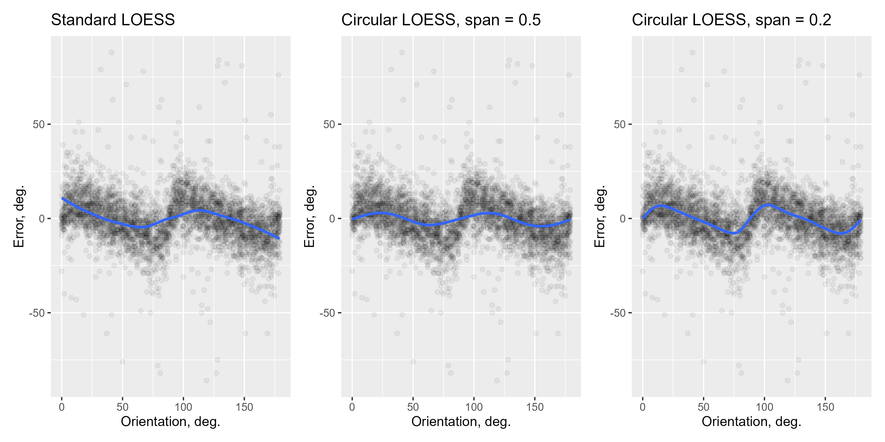

An implementation of circular-linear locally-weighted regression (LOESS)
Source:R/functions.R
circ_loess.RdProvides an locally-weighted average when the independent variable is circular and depended variable is linear. Mainly to use with ggplot2.
Usage
circ_loess(
formula = NULL,
data = NULL,
angle = NULL,
y = NULL,
xseq = NULL,
circ_space = NULL,
span = 0.75,
...
)Arguments
- formula
the formula, e.g., y ~ x
- data
data to use
- angle
a vector of angles (not used if a formula is provided)
- y
dependent variable vector (not used if a formula is provided)
- xseq
a grid to compute predictions on (optional, the default is to use 500 points spanning the circle)
- circ_space
circular space to use (90, 180, 360, or 2*pi)
- span
a span to adjust the degree of smoothing
- ...
other arguments (ignored)
Value
an object of circ_loess class with the following parameters:
anglethe angles in the dataythe dependent variable vales in the dataxseqthe grid on which the loess values are estimatedy_estthe estimated loess valuesy_sestandard errorswweightscirc_spacecircular space usedspanspan used
Details
Weights for the regression are computed as
w = (1-(d/d_max)^3)^3
where d is the angular difference between the point at which the estimate is computed and the angles in the data, and d_max is the maximum possible distance. If span is above 1, all points are included and d_max = circ\_space/(4*span). Otherwise, a proportion of the points included based on their distance to the point at which the estimate is computed and d_max is the corresponding maximal distance.
Examples
p <- ggplot(Pascucci_et_al_2019_data, aes(x = orientation, y = err)) +
geom_point(alpha = 0.05) +
labs(x = "Orientation, deg.", y = "Error, deg.")
p1 <- p + geom_smooth(method = "loess") + ggtitle("Standard LOESS")
p2 <- p + geom_smooth(method = "circ_loess", method.args = list(circ_space = 180, span = 0.5)) +
ggtitle("Circular LOESS, span = 0.5")
p3 <- p + geom_smooth(method = "circ_loess", method.args = list(circ_space = 180, span = 0.2)) +
ggtitle("Circular LOESS, span = 0.2")
(p1 + p2 + p3)
#> `geom_smooth()` using formula = 'y ~ x'
#> `geom_smooth()` using formula = 'y ~ x'
#> `geom_smooth()` using formula = 'y ~ x'
